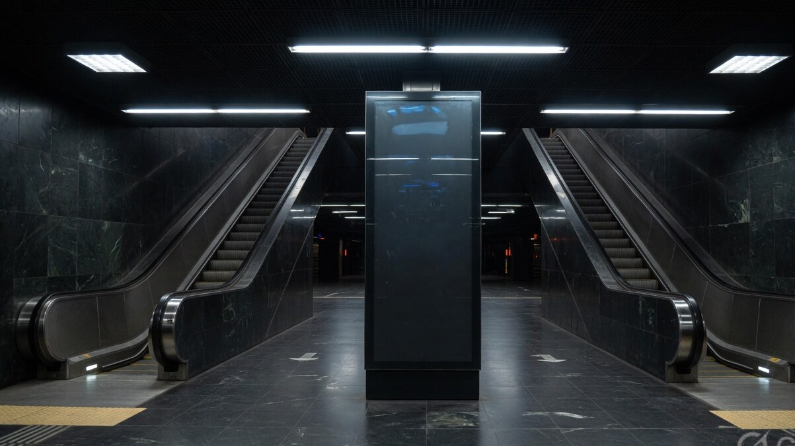
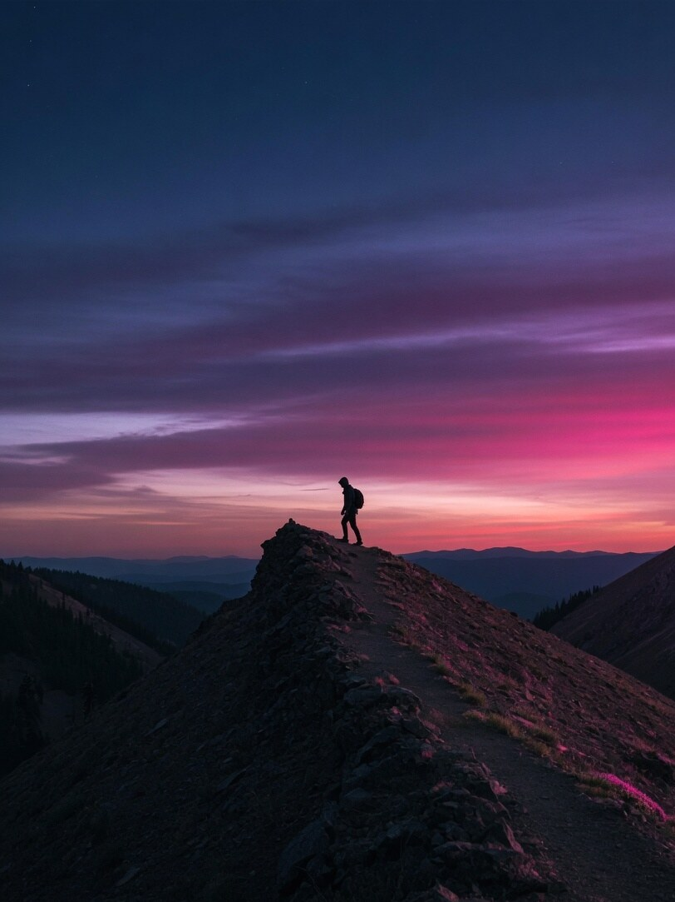
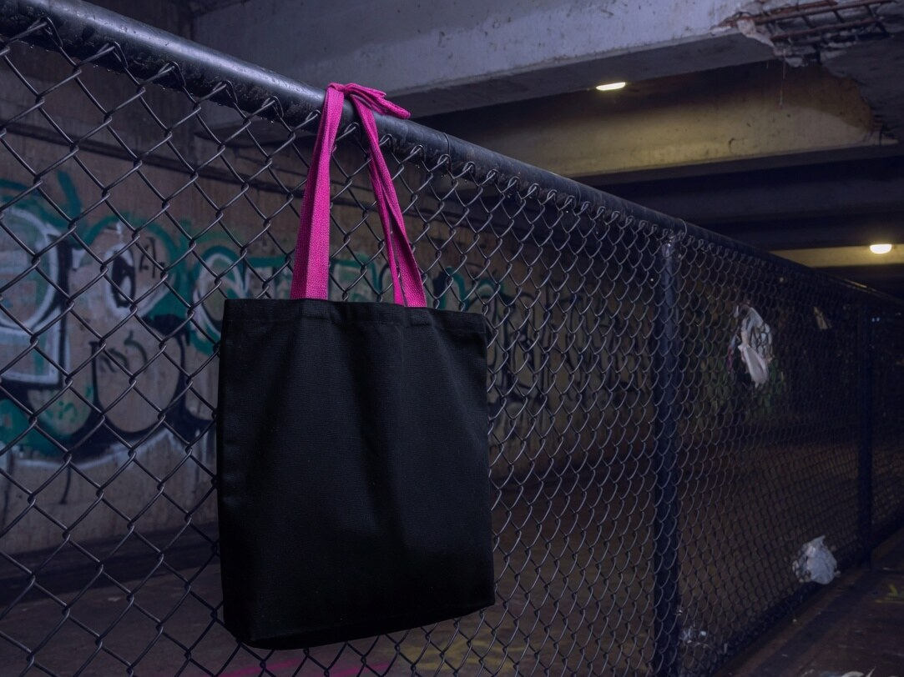
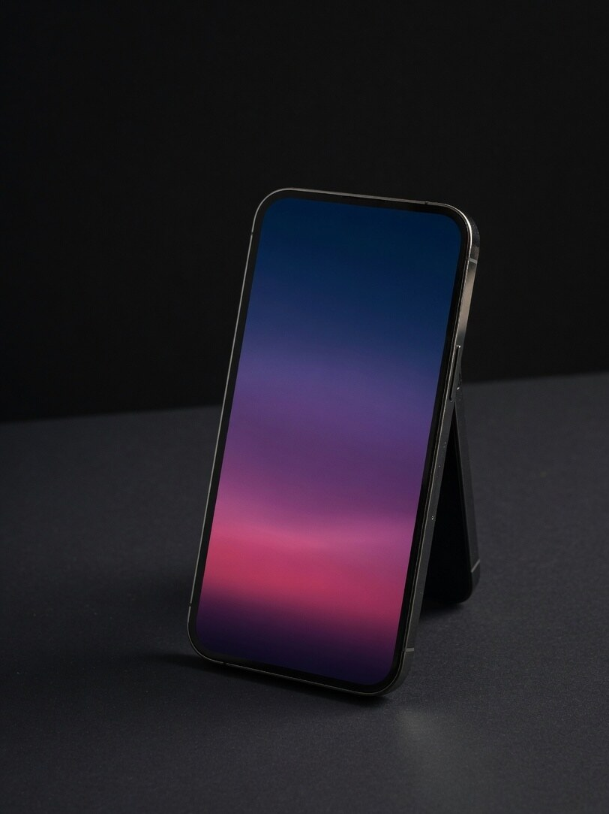

Wordmark
Quatra
Plus Jakarta Sans 800, tracking 0.16em. Always with the kites.
Logo design · night economy
Quatra is a fictional foundation for after-hours programs in transit halls. A square-counter mark on magenta heat, never a diamond hole.




Mark
Not a diamond hole. Clear space is one kite. Never a fifth petal. Never an outline in grey.
Color
#1A0B2E#7A2BB0#E23B7A#0B0B14Type
Quatra
Plus Jakarta Sans 800, tracking 0.16em. Always with the kites.
COUNTER □ · KITE 4 · #E23B7A
IBM Plex Mono for hex and clear space.
Rules